JocRoblox (platformă)
30 postări · cele mai noi primele · vezi în blog cu filtre
 CONFIRMAT24 octombrie 2026Roblox (platformă)
CONFIRMAT24 octombrie 2026Roblox (platformă)Roblox: fără thumbnail custom, jocul tău nu mai apare în recomandările de pe Home
🖼️ Roblox a anunțat pe DevForum că doar jocurile cu cel puțin un thumbnail custom mai primesc afișări din recomandările de pe Home.…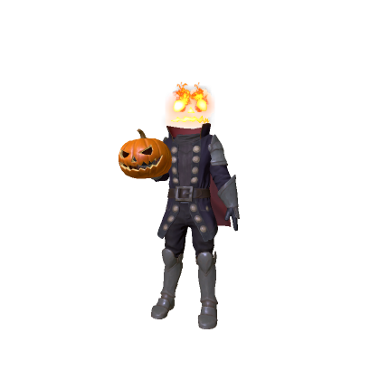
CONFIRMAT23 octombrie 2026Roblox (platformă)Hollow Horseman: bundle oficial Roblox de 31.000 Robux
🎃 Contul oficial @Roblox a anunțat bundle-ul Hollow Horseman pe X, vineri, 23 oct, la ~02:00 (ora României): „head’s off. gear’s on. the…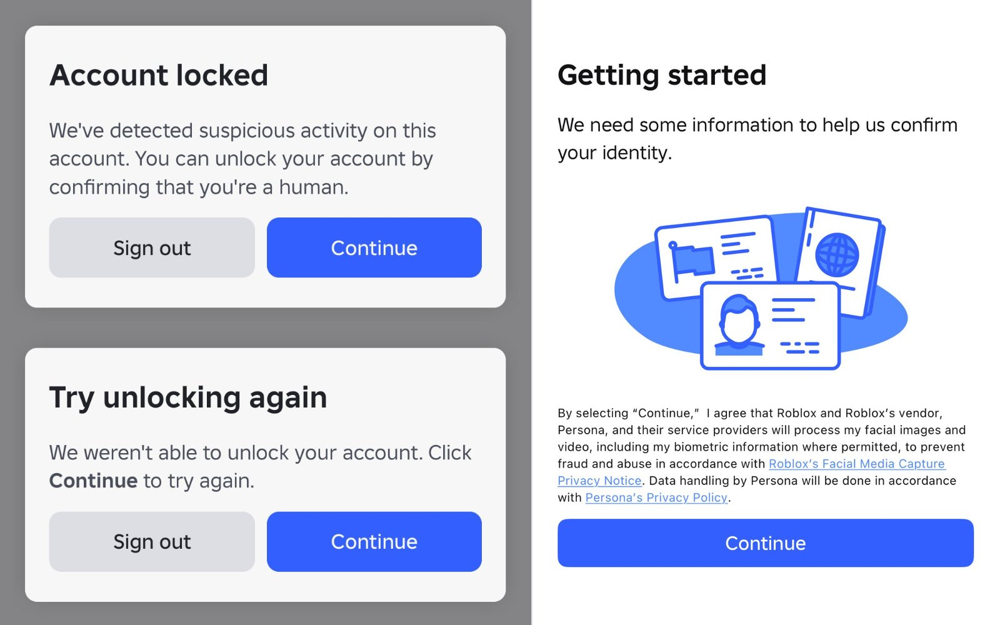
ZVON23 octombrie 2026Roblox (platformă)ZVON: Roblox blochează conturile „bot” cu CAPTCHA și verificare de identitate
RoUtility, un cont de știri Roblox, zice că Roblox are un sistem nou care prinde conturile „bot”. 🤖 • 🔒 Conturile care fac cereri automate…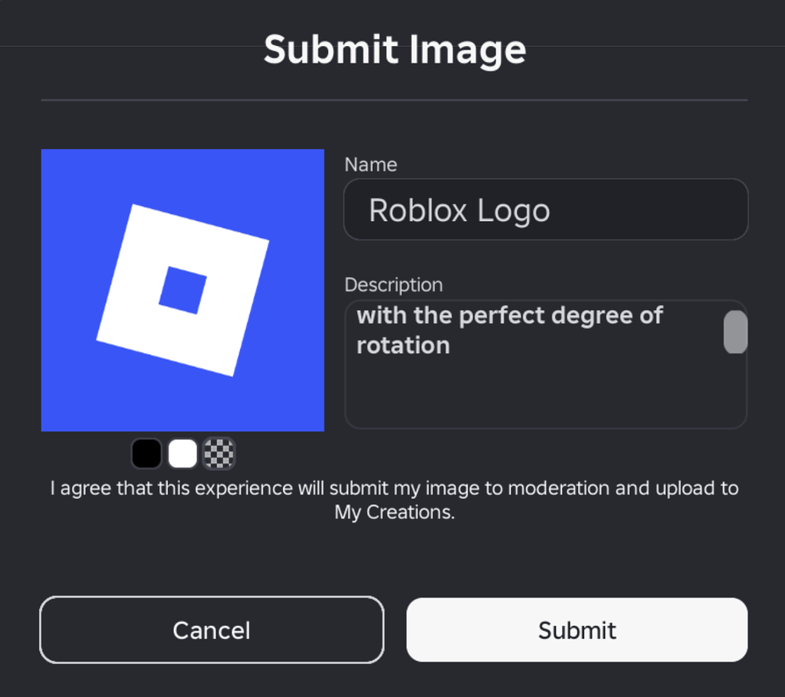
CONFIRMAT23 octombrie 2026Roblox (platformă)Roblox: jocurile îți pot salva în inventar imagini făcute în joc
Roblox a lansat publicarea de imagini direct din joc (anunț pe DevForum, luni 19 octombrie, 19:46 ora României). 🖼️ • 🎨 Un joc te poate…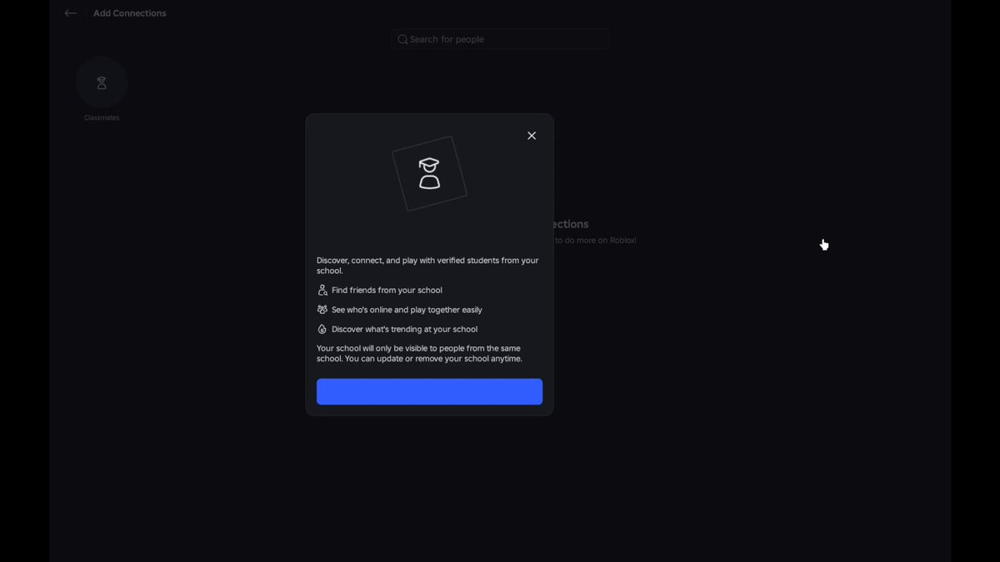
ZVON22 octombrie 2026Roblox (platformă)ZVON: Roblox pregătește „Școli”, cu item gratis pentru membrii fondatori
Eli Cauvert, un cont mic de leak-uri Roblox, a postat un video de 75 de secunde cu un feature nou la care ar lucra Roblox: „Școli”. • 🏫…Mai vechi
CONFIRMAT22 octombrie 2026Roblox Studio 744: GetCollections și coliziuni calculate async
Pentru developeri: Roblox Studio 744 a apărut (release notes, 22 oct). 🛠️ • CollectionService:GetCollections(Instance) e nou și returnează…Roblox (platformă)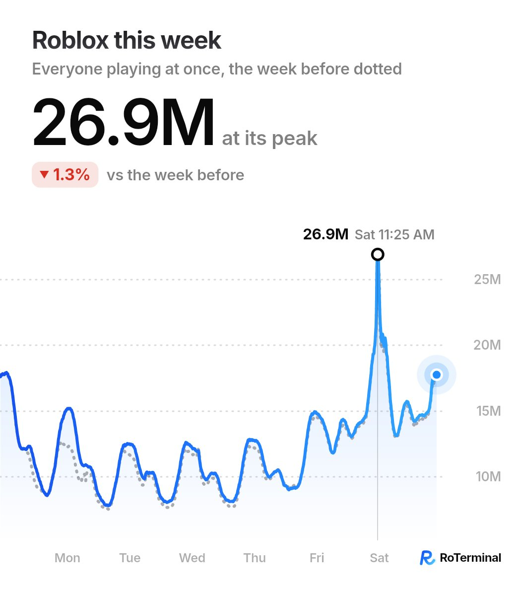
ZVON21 octombrie 2026Roblox: vârf de 26,9M jucători simultan sâmbătă
RoTerminal, un cont care urmărește statistici Roblox, a publicat cifrele săptămânii. Pe scurt: • 📈 Vârf: 26,9M jucători în același timp,…Roblox (platformă)CONFIRMAT20 octombrie 2026Jocul Roblox al BBC Bitesize, acuzat de părtinire politică
Un joc educațional de pe BBC Bitesize, găzduit pe Roblox, a ajuns subiect de polemică în Marea Britanie, potrivit Mail on Sunday. Ce…Roblox (platformă)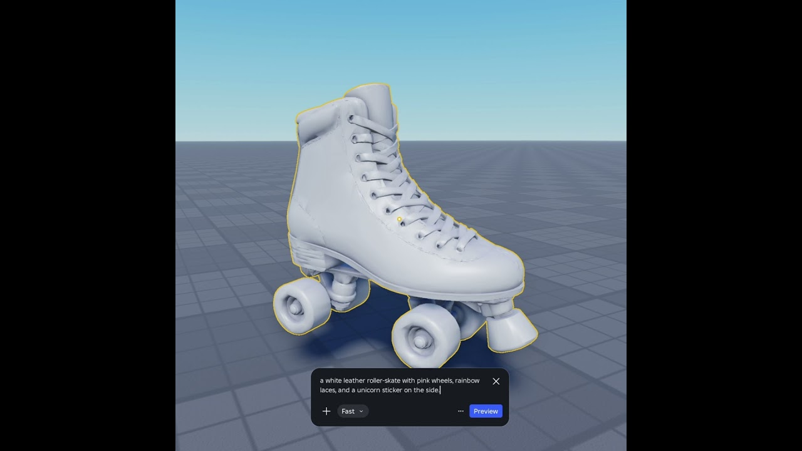
CONFIRMAT20 octombrie 2026Roblox Studio: texturi 4K generate cu AI (Quality mode, beta)
Roblox a adus în Studio un mod nou pentru texturile generate cu AI: Quality. E în beta. 🎨 Ce alegi când generezi o textură: • Quality:…Roblox (platformă) CONFIRMAT19 octombrie 2026
CONFIRMAT19 octombrie 2026Roblox își schimbă Termenii pe 1 noiembrie: cumperi de la Roblox, nu de la creator
De duminică, 1 noiembrie 2026, intră în vigoare noii Termeni de utilizare Roblox („Effective Date: November 1, 2026”). Ce se schimbă: •…Roblox (platformă) CONFIRMAT19 octombrie 2026
CONFIRMAT19 octombrie 2026Creatorul MM2: „Nu mai există jocuri Roblox fără cod scris cu AI”
Nikilis, creatorul Murder Mystery 2 (MM2), a scris pe X că „nu mai există jocuri Roblox fără cod AI” („there are no more Roblox games…Roblox (platformă) ZVON19 octombrie 2026
ZVON19 octombrie 2026ZVON: val de banuri false, jucătorii îi cer ajutor lui KreekCraft
Tot mai mulți jucători Roblox spun că au primit ban pe nedrept: contul lor ar fi „legat” de un alt cont banat, pe care zic că nu l-au…Roblox (platformă)CONFIRMAT19 octombrie 2026Arizona cere în instanță ca Roblox să predea date pentru ancheta despre siguranța copiilor
Procurorul general din Arizona, Kris Mayes, cere unei instanțe să oblige Roblox Corp. să predea documente și date în ancheta despre…Roblox (platformă)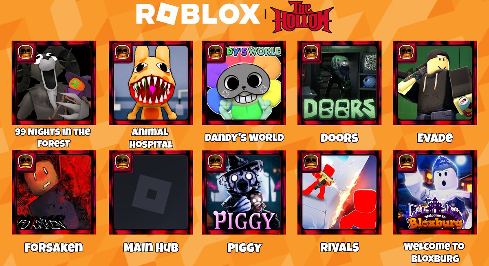
ZVON CONFIRMAT18 octombrie 2026ZVON: listă scăpată cu 10 jocuri pentru The Hollow (eventul Roblox de Halloween)
🔄 UPDATE 23 oct (✅ CONFIRMAT): Steal An Egg e side quest în The Hollow. Jocul are badge-ul oficial „The Hollow 26”, creat pe 20 oct chiar…Roblox (platformă)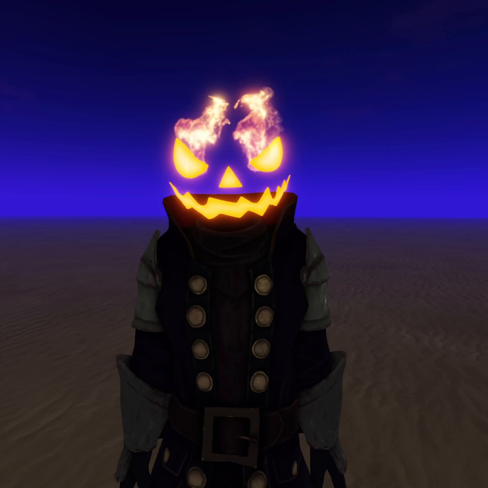
ZVON18 octombrie 2026ZVON: Roblox pregătește „Squashbuckler”, un Headless Horseman nou
Se pare că Roblox lucrează la un bundle nou de tip Headless Horseman numit „Squashbuckler”, cu cap de dovleac în flăcări și vibe de pirat.…Roblox (platformă)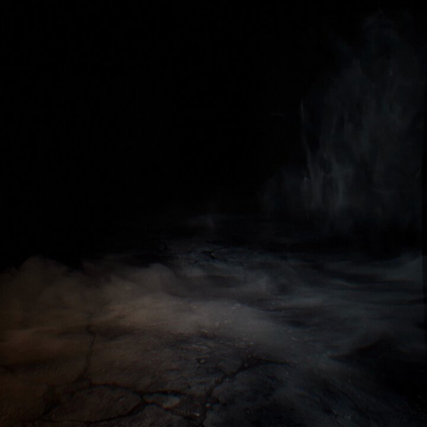
CONFIRMAT18 octombrie 2026Roblox scoate plicuri cu Robux la Target, de Halloween (SUA)
Roblox a anunțat oficial campania de Halloween la Target în SUA: „ghost the candy. get robux” — mini packs cu Robux disponibile acum la…Roblox (platformă)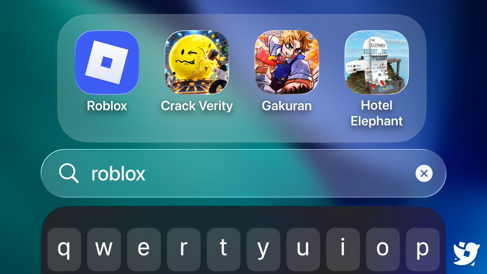
ZVON18 octombrie 2026ZVON (RTC): pe iPhone, căutarea Roblox arată jocurile jucate recent
Conform Roblox_RTC, pe iOS căutarea pentru Roblox arată jocurile jucate recent, iar poți căuta direct jocuri Roblox pe care le-ai jucat,…Roblox (platformă) CONFIRMAT18 octombrie 2026
CONFIRMAT18 octombrie 2026În Studio, inventarul din Toolbox va fi scos — înlocuit de Asset Manager
Conform anunțului de pe DevForum (beta Asset Manager) și raportării Blox_Feed, inventarul din Toolbox din Roblox Studio va fi scos și…Roblox (platformă)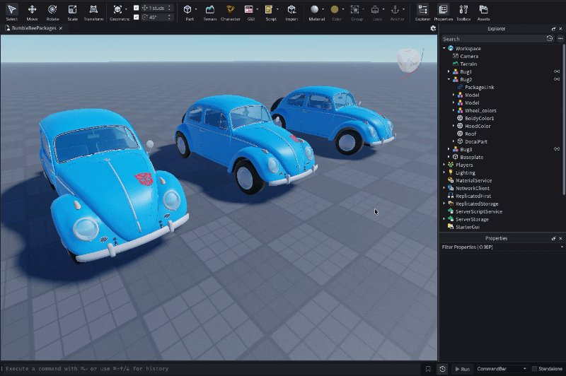
CONFIRMAT17 octombrie 2026Package Overrides a intrat în Studio Beta
Funcția arătată la RDC e acum în Studio Beta: poți modifica un package direct în place-ul tău (de exemplu, să revopsești o mașină) și…Roblox (platformă)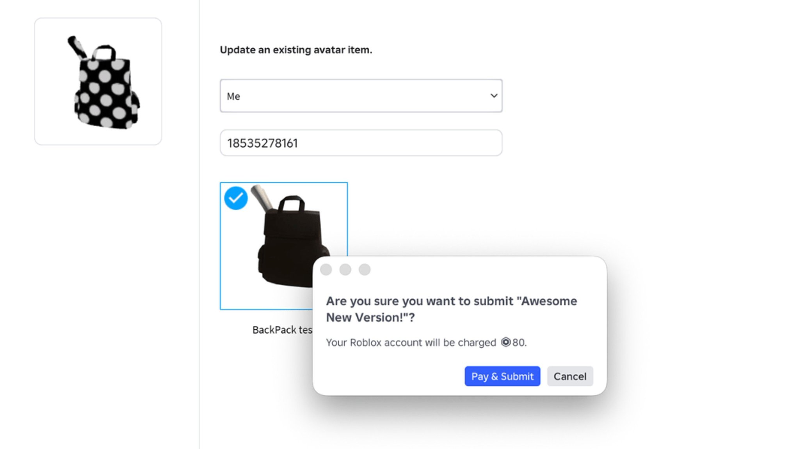
CONFIRMAT17 octombrie 2026Itemele de avatar stricate pot fi reparate după lansare
Creatorii pot urca acum o versiune nouă pentru accesoriile 3D și hainele deja publicate. ID-ul, istoricul vânzărilor și owner-ii rămân…Roblox (platformă)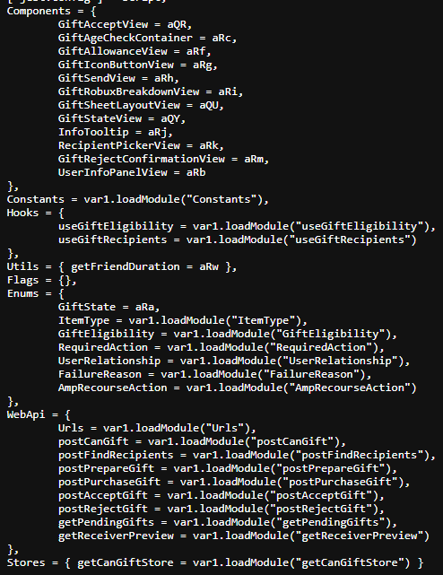
ZVON17 octombrie 2026ZVON: Roblox lucrează la cadouri cu iteme de avatar
Valra a găsit în codul Roblox o funcție de cadouri care pare să permită oferirea aproape oricărui item de avatar.Roblox (platformă)CONFIRMAT16 octombrie 2026Roblox: machiaj creat direct în joc
Roblox a anunțat pe 16 octombrie machiajul creat direct în joc. Jucătorii își fac machiaj, gene și sprâncene și le salvează în inventar,…Roblox (platformă)CONFIRMAT15 octombrie 2026Creator Analytics: măsurarea Discovery s-a schimbat pe 12 oct
De pe 12 octombrie 2026, Roblox înregistrează altfel impressions, clicks și plays din Home, Search și Charts. Poți vedea numere mai mari…Roblox (platformă)CONFIRMAT15 octombrie 2026Rate limit-uri API mai stricte după 19 octombrie
După 19 octombrie 2026, Roblox coboară rate limit-urile pe cookie și IP neautentificat pentru șase servicii web API (inclusiv badges,…Roblox (platformă)CONFIRMAT15 octombrie 2026Creator Showdown în São Paulo: lupta pentru coroană e diseară!
Roblox dă live Creator Showdown azi 15 oct la 23:00 RO pe YouTube, TikTok și Twitch; prezentare în portugheză, plus stream în engleză.Roblox (platformă)CONFIRMAT15 octombrie 2026Umbre noi pentru UI în Roblox Studio
Umbre pentru text, inset, knockout și cu gradient pe elementele de interfață. E o funcție în beta în Roblox Studio (UIShadow).Roblox (platformă)CONFIRMAT15 octombrie 2026Quick Words personalizate
Jocurile pot avea până la 3 categorii de replici rapide, cu 3–10 cuvinte fiecare.Roblox (platformă) CONFIRMAT14 octombrie 2026
CONFIRMAT14 octombrie 2026OFICIAL: The Hollow, eventul de Halloween al Roblox — 9 monștri în 9 nopți, de vineri 23 oct
⏰ UPDATE 22 oct (✅ CONFIRMAT, anunțul oficial Roblox): Early access Plus din 22:00 în seara asta, pentru toți de la 00:00 (ora României).…Roblox (platformă)CONFIRMAT14 octombrie 2026Roblox simplifică publicarea jocurilor
Roblox face mai simplu drumul spre publicare, iar creatorii pot invita până la 10 testeri înainte de lansare.Roblox (platformă)CONFIRMAT14 octombrie 2026Licențe pe IP-uri oficiale pentru iteme UGC
Creatorii pot face iteme de avatar bazate pe IP-uri oficiale, prin licențe din Marketplace.Roblox (platformă)